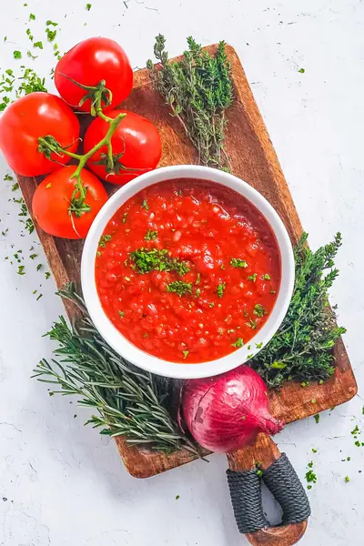

Healthy Marinara Sauce

Ingredients
- 28 ounces canned crushed tomatoes (800g)
- 2 garlic cloves (crushed)
- ½ onion (diced)
- 1 tablespoon olive oil
- ½ tablespoon red wine vinegar
- 2 teaspoons dried Italian mixed herbs
- ¼ tsp salt (more to taste)
- ⅛ tsp black pepper (more to taste)
Steps
- Heat olive oil in a large pot. Add the diced onion and sauté until translucent, add the garlic and continue to cook for one to two minutes.
- Add all the remaining ingredients, bring to a boil. Reduce heat and simmer for five minutes; stirring.
- Remove from heat and allow to cool completely before storing in an airtight container in the refrigerator for five days. This recipe makes 4 cups of marinara sauce. One serving is ¼ cup.
Recipe by Anjali Shah · The Picky Eater, from The Picky Eater. Saved here for personal use; the original has the full notes, tips and photos. Open original